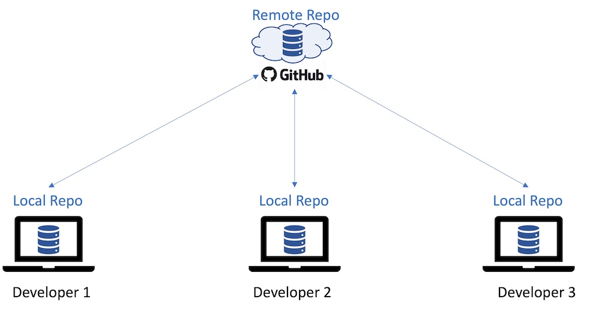
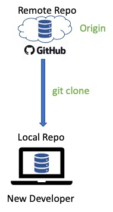
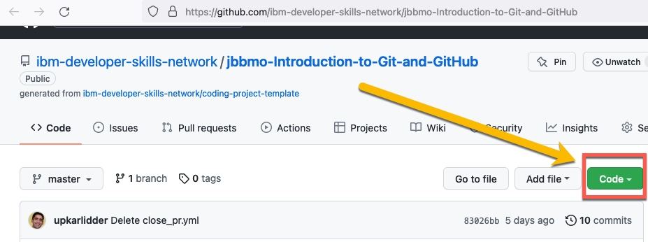
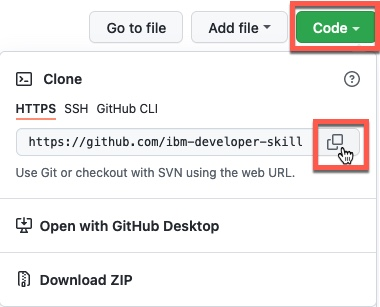
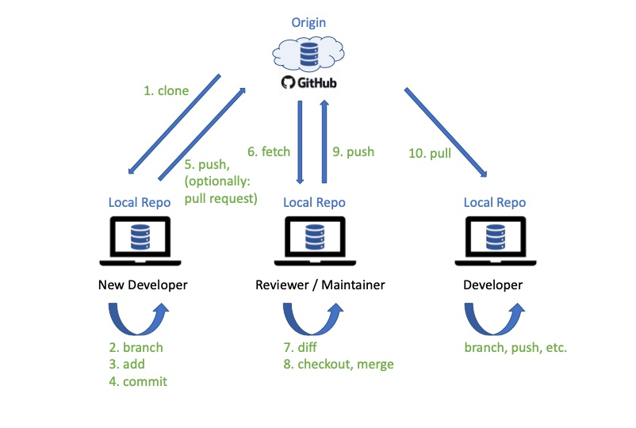
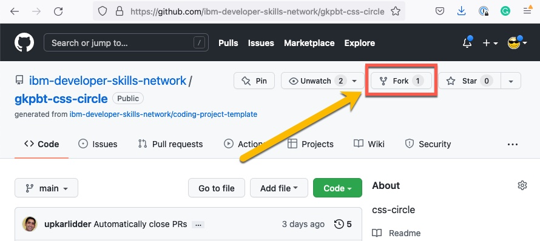
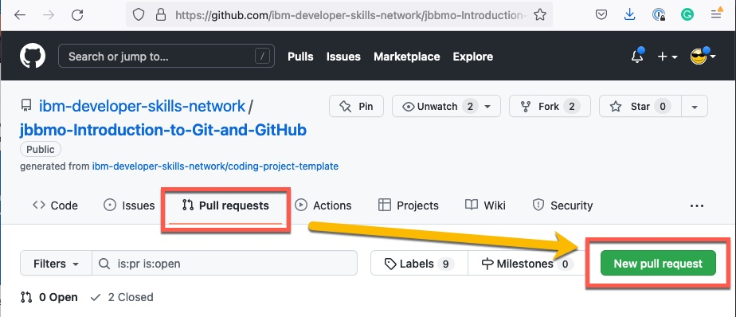
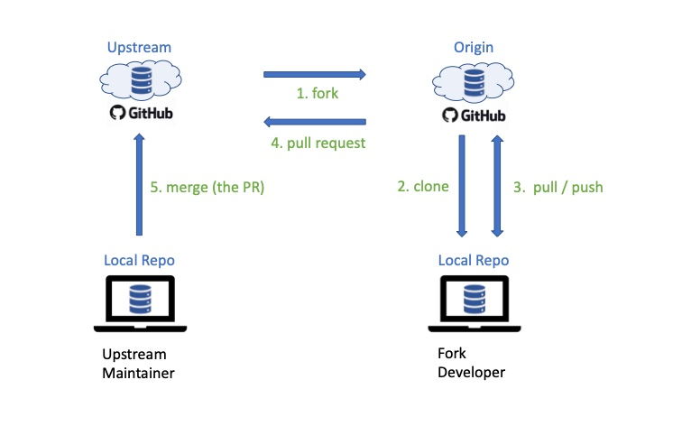

If you are wondering what is the difference between fork and clone, don't worry - that is a natural question to have when you are starting out with GitHub. In this reading we will answer this question as well as clarify when should you use which and how do you perform the fork and clone operations. As well as demystify repository (repo) terminology like local, remote, origin and upstream. We will also walk through a typical workflow involving forking, cloning, making changes and keeping various repos in sync using fetch, push, pull and pull requests.
After completing this reading, you will be able to:
Distributed source version control systems like GitHub allow for projects to have multiples developers collaborating on its codebase in parallel. A project may reside on GitHub.com as a public or private repository. Each developer working on the project may have their own copies of the repository on their computers. A copy of the repository on a developer's computer is local to that developer, and hence that developer also refers to that repo as their local repo. The copy of the repository on GitHub.com is on a remote server, and hence for each developer that is a remote repo.

Let's say a new developer now joins the team to collaborate on the project. This developer can create a identical copy of the remote repo using the git clone operation. The remote repo from which the project is originally cloned from is also referred to as the origin.

Any repo in GitHub can be cloned by going to the repo and clicking on the Code button.

You will then have an option to get the entire codebase of the remote repo in several ways, including the ability to copy the HTTPS URL, and then specifying the copied URL to perform git clone URL command from your local machine.

After cloning the repo to the local machine, a developer can start making changes to the codebase. This could be for tasks like adding features and enhancements or fixing bugs. Typically the developer would use git branch to create a branch, e.g. feature1-branch, make that branch active using git checkout and make changes within that branch - such as by adding or editing files. The developer saves their changes often within the branch by using git add followed by git commit.
Once the changes for a particular branch are complete, rather than merging to the main branch directly, it is often a good practice to push the new branch with changes to origin where other developers/reviewers can test/review the changes before merging the branch to main.
NOTE: Since in this scenario the
feature1-branchwas developed by a new developer on the project, that developer may not have the access to merge their branch with main in origin. In fact, in many projects, only the project maintainers or admins are allowed to merge to the main branch, or in some sames a peer review may be required. In order to request that your changes be reviewed and merged with the main branch, many projects require that aPull Request(PR) be submitted. Whereas, in some cases, e.g. if you are a lone developer on the project, this PR step may be omitted and you could merge and push your changes directly if you have write access to the origin repo.
Every once in a while, a developer may want to get the latest copy of the repo from origin to serve as the base for making changes or reviewing changes by others. For example, this may be the case after the changes in feature1-branch have been pushed to origin and the peer developer wants to review the code. The git fetch command can be used for this purpose.
The git diff command can help others reviewing your code to to identify and compare the changes. Once a peer reviewer or project maintainer has reviewed the changes, and is satisfied, the reviewer will git checkout the main branch and then git merge the new feature1-branch, which can then be deleted. After the branch is merged locally, the reviewer can git push the updated main branch back to origin.
NOTE: The
git-remote -vcommand can be used to check which remote repos you are synchronzing push and fetch changes with.
Another option for getting the latest copy of the repo is to use the git pull command. The pull command in effect is a combination of fetch and merge. That is, using this single command, you can both fetch and merge the changes into your local repo. For example, another developer who wants to use the updated codebase with the feature1 changes that have been merged to main branch in origin, can use the git pull command to fetch the updated codebase from origin and merge with his/her local codebase before starting development on a new feature.
This clone->branch->merge workflow described here can be summarized in the following diagram.

If a developer wants to create a derivative project with another project as the starting point, or work on a project using a separate or independent clone, the developer can chose to fork a project. You can fork any public project by going to its GitHub project page and clicking on the Fork button towards the top of the page.

NOTE: The fork option is available only using the web interface and there is no git command to create a fork. You can however use a
git cloneworkaround - indicated at the bottom of this reading if interested.
The project from which you create the fork is called the upstream project.
Once a project has been forked, the developers with access to the fork can work on updating and making changes to the fork using the same workflow as described previosuly i.e. the forked copy of the project now becomes the origin and developers with access to origin can create clones of it on their local machines, where they can create and merge branches, and synchronize changes with the origin using pull and push.
However it is important to note that the synchronization of changes using merge and push can only be done with repos that the developers have write access to i.e. in this case their fork of the project i.e. the origin from which they create their local clones. But what if a developer wants contribute their changes back to the upstream project that they do not have write access to? In this case they can submit a pull request or PR with their proposed changes. A pull request can be opened by going to the project's homepage, navigating to the Pull Requests tab, and then clicking on New Pull Request.

Note: the term
Pull Requestshould not be confused with thegit pullcommand that you use tofetchandmergethe latest codebase into your local repo. APull Request, as the name implies, is merely a request to review andpullyour proposed changes. As part of the PR, you provide details of the proposed changes and your implementation.
The maintainers of the upstream project can review the changes in the PR and decide to merge them or not. In some cases they may provide feedback (by commenting in the PR) or ask the submitter of the PR to perform some conflict resolution such as by applying their changes to the latest codebase and resubmitting the PR.
This fork->clone->pr workflow described here is summarized in the figure below.

By now you should be familiar with the difference between fork and clone. So let's summarize when you should clone vs. fork. Typically if you have access to a project repo e.g. as part of a team developing a codebase collaboratively, you can clone the repo and synchronize changes from your local copy of the repo using pull and push.
If however there is a public project that you want to contribute to but do not have write access to, or use a public project as a starting point for your own project, you can fork the project. Then work with the forked codebase by cloning it to your machine and collaborating with your development team working on the fork using the pull-push synchronization with your fork of the project. But if you want to contribute your changes back to the upstream project (the original project that you forked from), you can submit your changes using a pull request.
In this reading you learned that:
git clone command.origin.pull updates from the origin and push your changes back to it.upstream projectPull Request (PR)FYI: Although the usual workflow to start with the codebase of another project is to first fork it and then clone the fork, you may be tempted to simply clone the
upstreamproject since it is quite convenient to do so from your local machine using thegit clonecommand. If you do so, you will note that the project you clone from will by default become theoriginrepo. But since you likely don't have write access to the upstream repo that you cloned from, you will not be able to push your changes to it. Don't worry. You can easily rename the origin to upstream using the commandgit remote rename origin upstreamand then add a new origin usinggit remote add origin <url>to point to the URL of a new GitHub repo that you have created or have access to, and use that repo for making your changes to the fork's code.
| Date | Version | Changed by | Change Description |
|---|---|---|---|
| 2022-01-19 | 1.0 | Rav Ahuja | Initial version created |
| 2022-01-27 | 1.1 | Richard Ye | Fixed Typos |